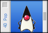

|
Diese Komponente installiert eine Palette in der Designumgebung. Sie wird nach und nach erweitert, wenn kompatible Komponenten installiert werden. |
| 1. | Erstellen Sie einen Ordner "Components" neben der Strukturdatei Ihrer Datenbank (".4db") |
| 2. | Legen Sie den Ordner "4DPop.4dbase" oder ein Alias davon in den Ordner "Components". |
| 3. | Öffnen Sie Ihre Datenbank. |
| 4. | Tippen Sie " Install 4DPop"in der "Datenbankmethode On Startup" und drücken dann die Tabulatortaste. Der Code zum Laden der Palette von 4DPop wird in die Methode eingefügt.
|
| 5. | Öffnen Sie die Datenbank erneut, erscheint die Palette im Designmodus auf dem Bildschirm in der unteren linken Ecke. |
*Auf Macintosh ist die Komponente ein Paket. Die Endung "4dbase" ist je nach den Einstellungen für die Anzeige nicht zwingend sichtbar.
Die 4DPop Hilfe ist im Menü Hilfe verfügbar oder wenn Sie in der Palette auf das Icon "i" klicken.
Sie erscheint im Designmodus in der unteren linken Ecke des Bildschirms. Ist sie geschlossen, können Sie sie durch Ziehen des Handgriffs öffnen.

Doppelklicken Sie bei geschlossener Palette auf den Handgriff, öffnet sich die Palette und die Größe passt sich an die Anzahl der vorhandenen Werkzeuge an. Doppelklicken Sie bei geöffneter Palette auf den Handgriff, wird sie geschlossen.
Sind keine kompatiblen Komponenten installiert, zeigt die geöffnete Palette folgendes Bild:

Sind eine oder mehrere Komponenten installiert, erscheinen sie als Schaltflächen.

Sie können die Palette durch Anklicken der Titelleiste bewegen, auf dem Bildschirm nach links oder rechts setzen. Die Position der Palette wird gespeichert.
In der Titelleiste ist ein Kontextmenü verfügbar. Es zeigt erneut alle geladenen Werkzeuge und einige Anzeigeoptionen der Palette.
Die Komponenten werden alphabetisch geladen. Soll eine bestimmte Komponente an erster Stelle (von links) geladen werden, können Sie dem Dateinamen z.B. "01" voranstellen.
Setzen Sie eine oder mehrere kompatible* Komponenten oder ein Alias in den Ordner "Components" Ihrer Datenbank und starten Sie diese neu, damit Sie auf diese neuen Werkzeuge über die Palette zugreifen können.
Folgende Komponenten sind verfügbar:
4DPop Bookmarks |
Organisieren Sie die täglich genutzten Bookmarks: URL, Dateien, Ordner, E-Mails... Steuern Sie Ihre Favoritenliste per Drag-and-Drop. |
 4DPop Constants Editor 4DPop Constants Editor |
Erstellen und veröffentlichen Sie Ihren individuellen Satz von Konstanten in einem eigenen Editor. Verwenden Sie diese sofort in Ihren 4D Methoden. |
 4DPop Image buddy 4DPop Image buddy |
Verwalten Sie alle Bilder über den Ordner Resources in Ihrer Anwendung. Sie können Ihre Bilder leicht auswählen, duplizieren und umwandeln, eine Vorschau anzeigen, sie in Ihre Formulare oder Anwendungen ziehen und über Import-Werkzeuge PICT oder CICN Ressourcen in PNGs konvertieren. |
 4DPop Migration 4DPop Migration |
Portieren Sie Ihre Anwendungen problemlos auf 4D v11 SQL: - Bearbeiten Sie die Tastenkürzel des Entwicklungsmodus - Übertragen Sie alte eigene Benutzerkonstanten aus der „Ressource fork“ der Struktur in ein eigenes Plug-In, - Konvertieren Sie alte Makros |
 4DPop Commands 4DPop Commands |
Suchen Sie einen Befehl über Schlüsselwort, öffnen Sie per Doppelklick die dazugehörige online Dokumentation und ziehen Sie Befehle (und ihre Parameter) per Drag and Drop in den Methodeneditor. |
 4DPop Rulers 4DPop Rulers |
Zeigen Sie Lineale und Hilfslinien im Entwicklungs- und im Anwendungsmodus für präzises Abmessen auf dem Bildschirm an. Simulieren Sie eine Bildschirmgröße und gestalten die Oberfläche auf Pixel genau. |
 4DPop Color Chart 4DPop Color Chart |
Für all Ihre Projekte präzise Hintergrund- und Vordergrundfarben aus einer Vielzahl professioneller Paletten (RGB, HSL, etc.) auswählen und den entsprechenden Quellcode einfach per Drag and Drop in Ihren Methoden erstellen. |
 4DPop sqlSchemas 4DPop sqlSchemas |
SQL Schemas zur Verwendung externer SQL Verbindung grafisch definieren (ODBC, SQL Pass trough, 4D for Flex, etc.). Schemas werden angewandt, wenn die Datenbankmethode On sql authenticate definiert ist. |
 4DPop Window 4DPop Window |
Steuern Sie über ein hierarchisches Menü die Fenster im Entwicklungs- und im Anwendungsmodus. Ordnen Sie Ihre Fenster oder stellen Sie Fenster wieder her, die bei geänderter Auflösung außerhalb des Bildschirms liegen. |
 4DPop XLIFF 4DPop XLIFF |
Verwenden Sie 4D als echten Lokalisierungseditor zum Verwalten und Bearbeiten der XLIFF Dateien in Ihrer Anwendung. Übertragen Sie Textreferenzen direkt in den Methoden- oder Formulareditor. |
* Lesen Sie in der 4DPop Hilfe nach, wie Sie kompatible Komponenten erstellen können.
Diese Komponente wird in kompilierter Version geliefert. Der Source-Code liegt jedoch im Ordner jeder Komponenten im Dokument "SOURCES" bei.
Besuchen Sie das Forum zu 4D Pop unter: http://forums.4d.fr/